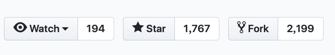
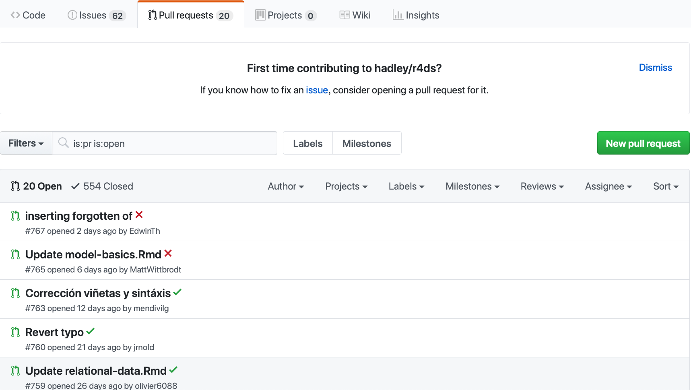

Chapter 2 GitHub
GitHub與Git之間的關係
如果你有在用Git，你不一定會用到GitHub；但若你有用GitHub，你一定有在用Git
Git是一套協助開發者進行版本控制的程式。
GitHub = Git + Hub。
Hub本身可以理解為中心、樞紐的意思，略有集散地的感覺。
GitHub本身是一個雲端儲存程式檔案的一個平台，讓許多開發者可以藉此進行雲端備份、遠距共同開發（這樣就不用每天都要進辦公室討論XD），交流新技術的地方。目前也是全球最大的
男性開源程式碼（Open Source）交流平台。可以理解為開發者圈子的臉書。許多人也會藉此展現自己的作品集作為爭取工作機會的籌碼。
一個簡單的反例是GitLab，所以其實GitHub所提供的程式碼備份（託管）服務並不是唯一。
- Git世界裡面的資料夾叫做repository(repo)，可以理解為儲存庫。只要有賦予其版本控制的資料夾都是一個repo。
GitHub環境介紹
以下內容示範截圖皆以R for Data Science以及PoMingChen/GitDemo這兩個repo作為說明
Fork
第一部分
第二部分

- 作用：把別人整個repo複製到我的GitHub帳戶底下，我因此有了完整的屬於我的另外一份。
- 使用時機：目的在參與。當看到自己有興趣的專案，想要進一步玩玩或者做出貢獻，為了避免損及（更動）到原本作者的東西，就需要Fork自己的一份回來，改好之後就可以再送pull request（section ? ）給原作者。
Pull Request
第一部分
- 作用：將自己寫好的程式送出給別人，或者把別人的程式拉進來給自己使用。
- 使用時機：團隊開發時當我寫好一個新的功能（或修改好bug）時候要送出給團隊使用；或者發現某個功能別人已經寫好了，想要奠基在他的程式碼做開發，就需要先把他納進來。
- 詳見後面章節（?_給超連結）